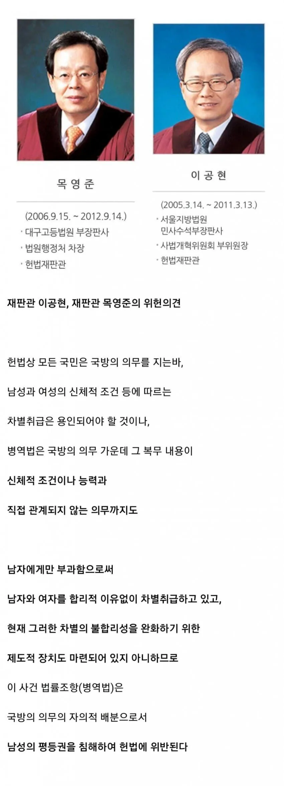

남자만 군대가는 점이 위헌이라는 헌법재판관님들..jpg
댓글
이스라엘 사례 들어보니깐 여성 복무는 좀 문제되는거 같고 기본 4주 훈련 이런거에 다른걸로 지원하는게 좋을꺼 같음
어떤 문제가 있었음 핑프 ㅈㅅ 간단히 소개 가능?
우선 강간같은 문제도 생겼었고
작전중에서 여성군인을 보호하려다 작전이 제대로 안되거나 피해 사고가 나는게 대표적임
취사병, 행정병, 운전병(식자재운반같은거)
공병(굴삭기등) 대충 생각해봐도 비전투 인원 많은데?
맞어 나는 기본적으로는 세금형식으로 하고 세금이 싫으면 비전투병 지원하는게 가장 좋은 방식이라고 생각해
그 세금을 보통 누가 내주게될까를 생각하면 세금으로 떼우는건 좀 문제가 있는듯
아예 의무가 없는거 보다야 낫겠다마는...
누가 내는지보다 의무지 뭐 군대도 강제로 가는건데 학자금대출도 계속 딸려가고 인구수 반이 여자인데 그걸 다 비전투로 채울수도 없고 세금말고 다른 더 좋은 방법이 있으면 좋고
공익가라고 ...
드론 조종병에 남여 필요하나.
진짜 법관
우크라이나 보면 나라 망할 수준이어도 여성 징집 안하는거 보면 우리도 못할거 같음
나도 궁금해서 댓글 다니까 개드립 애들 말로는
군수물자 생산 등 뭐 후방에서 지원중이라는데 다른 사람 말로는 이미 외귝으로 다 튀었다고 하고….
오... 누군가 해줬으면 좋겠을 저런 말을 해 주는 사람들이 있었구나...
군인까진 바라지도 않고 의무적으로 한달정도 입소시켜서 안보교육하고 기초군사 훈련은 해야 된다봄
동감임 ㅇㅇ
그래서 정신 차리면 다행인데...
애초에 제정신 아닌 련들이 들어가고 나서 할 말들이 벌써부터 상상되서 머리 아프다.
남자들 보내던 산엊기능요원(공돌이)
사회복무요원
다 여자로 대체해야 된다
군대갔다온 여자들 다 이 얘기하더라 교육하고 마지막에 행군까지 다 시키면 달라진다고
맞는 말이긴하잖아요..............국방의 의무가 총들고 사격만하는게 아닌데
사실 총들고 사격정돈 할수있음.
기본 4주 훈련은 사지멀쩡한 여자는 모두 받을수잇다고봄
스윗 틀딱새끼 : 경제적으로 비효율적이고 어쩌고저쩌고 웅앵웅
볼때마다 빡치는게 부사관 장교 여경은 되는데 왜병사는 안되냐는거지
어디 노예새끼들이나 하는 천박한 일을 여성에게 시키는거죠?
전시국가임 휴전상태인거지
언제 싸워도 이상하지 않은데 여자도 가야함
전쟁나면 인구 절반은 뭐하게?
사실 이게 누가봐도 맞는 논리긴 한데
ㄱㅊ 한남새기들 군대안가는 래퍼들 머리채나 잡을줄알지 여자들보고 뭐라못함 ㅋㅋㅋ 천성이노예새기들이라 앞으로도 평생 남자만 착취당할거야 왜? 같은 남자들 머리채만 쳐잡는 너네때문에~
이런 당연한 사안을...